Twelve apps built
with Graph Nexus
Each example is a complete app with its own data. Open one, click around,
then read its source to see how it is put together.
-
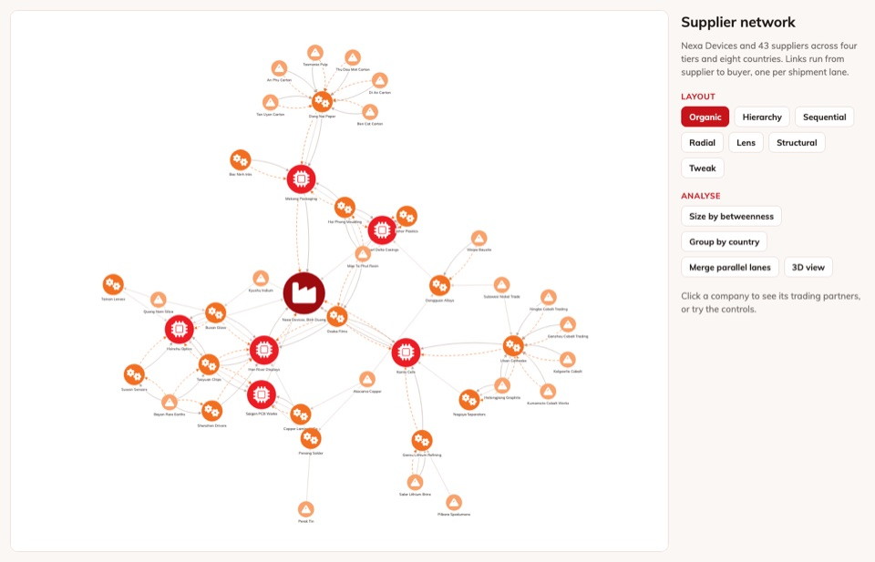
Supplier network
Nexa Devices and 43 suppliers across four tiers and eight countries. Try each layout, size suppliers by betweenness, group by country or switch to 3D.
-
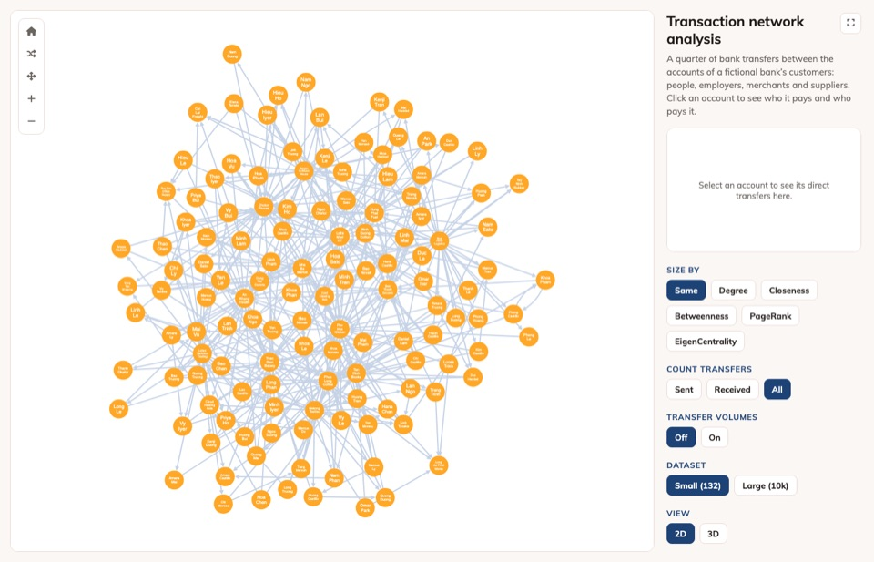
Transaction network analysis
A quarter of bank transfers between people, employers, merchants and suppliers. Size accounts by degree, closeness, betweenness or PageRank, then load 10k accounts or view it in 3D.
-
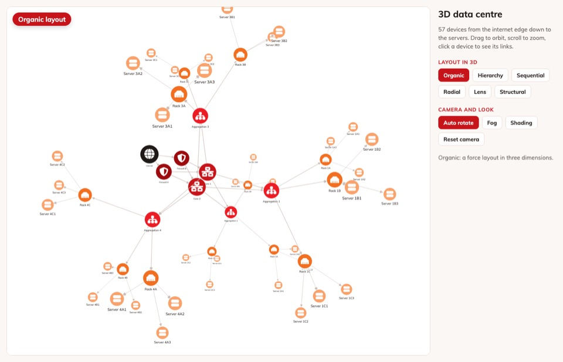
3D view
A data centre of 57 devices from the internet edge down to the servers. Orbit, zoom and switch layouts in 3D.
-
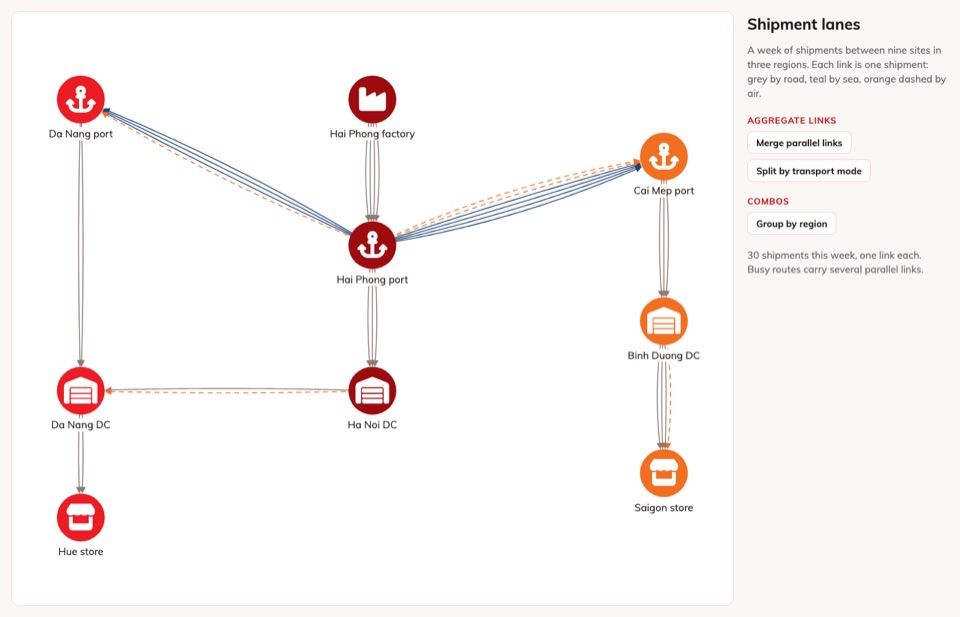
Combos and aggregate links
A week of shipments between nine sites in three regions. Merge parallel links, split them by transport mode and group sites by region.
-
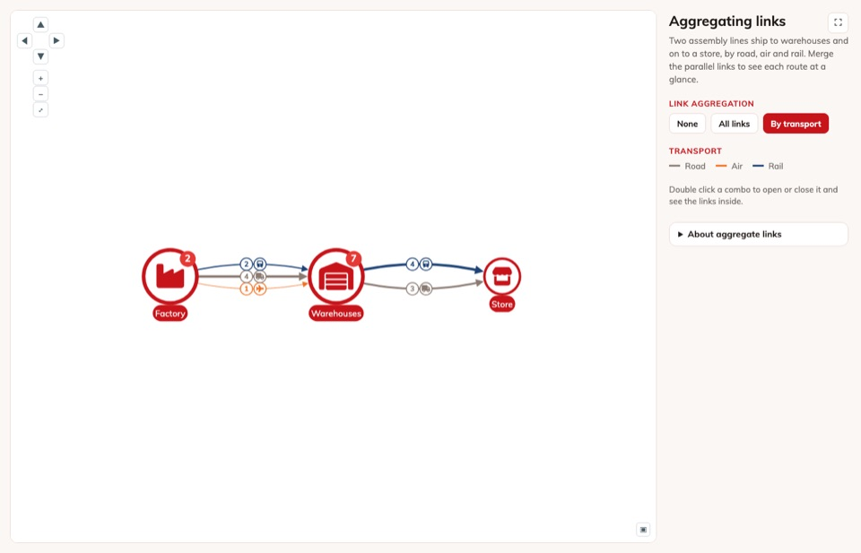
Aggregating links
Switch between no aggregation, all links and aggregation by category, and double click combos to open or close them.
-
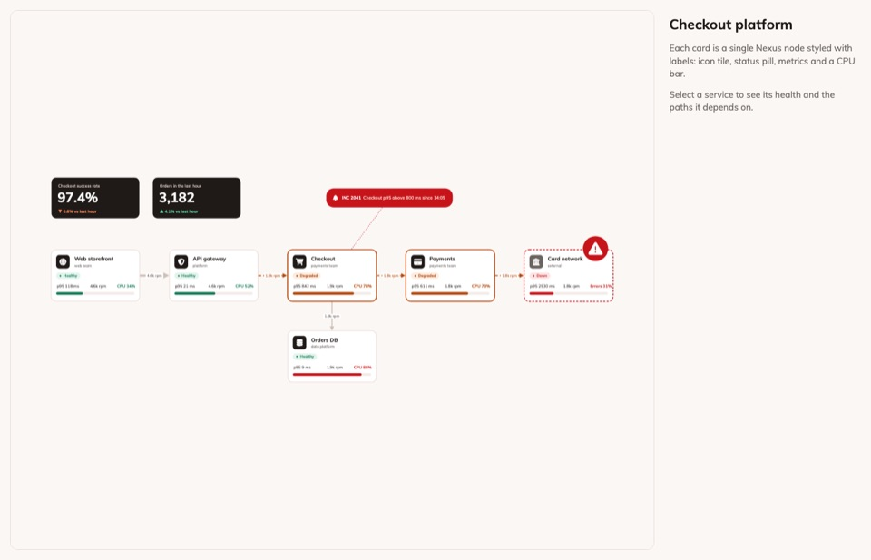
Service map
A checkout platform where every card is one node styled with an icon tile, status pill, metrics and a CPU bar.
-
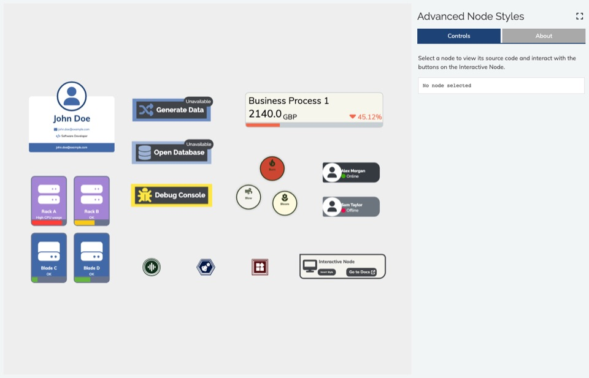
Advanced node styles
Custom shaped nodes built from label objects. Select a node to see the source code that draws it.
-
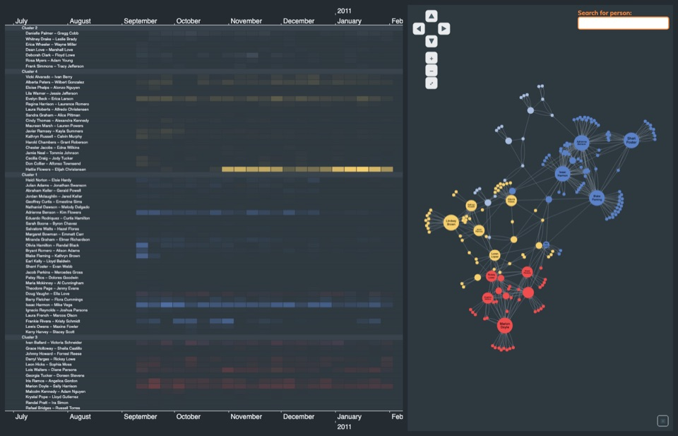
Timeline with a network chart
Months of contact between people as a heatmap timeline beside the network they form. Search for a person to find them in both.
-
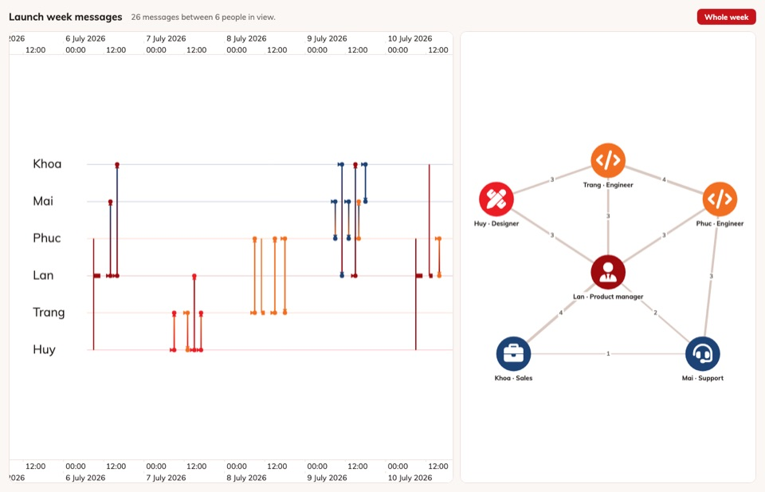
Linked timeline and chart
Launch week messages between colleagues. Zoom the timeline to filter the chart and click a person in either view.
-
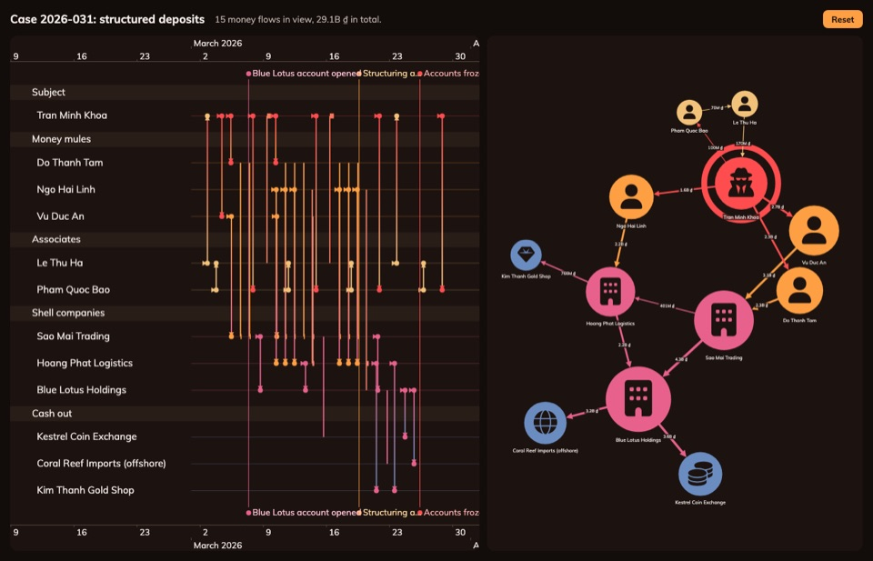
Payments investigation
A case of structured deposits. Zoom or pan the timeline to filter the network of parties and accounts.
-
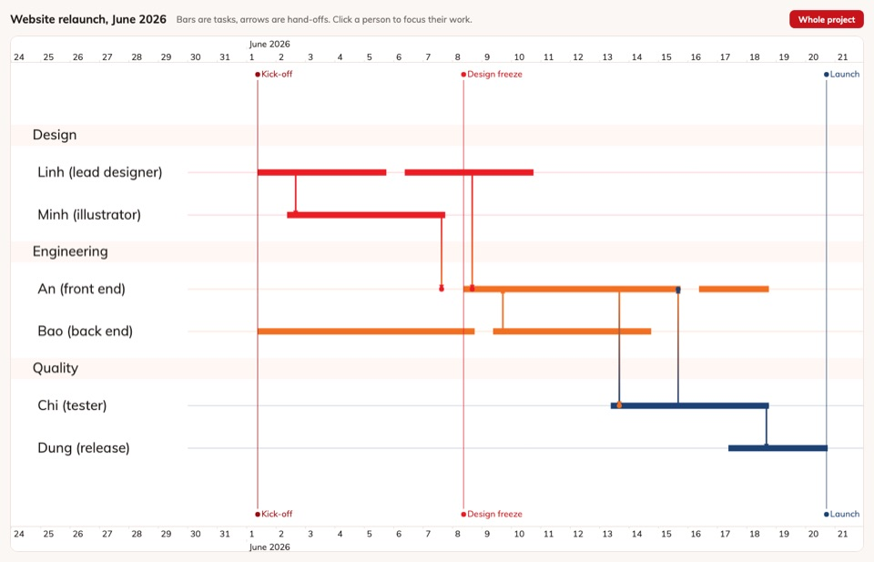
Project timeline
A website relaunch: tasks as bars, handoffs as arrows between people, and markers for key dates.
-
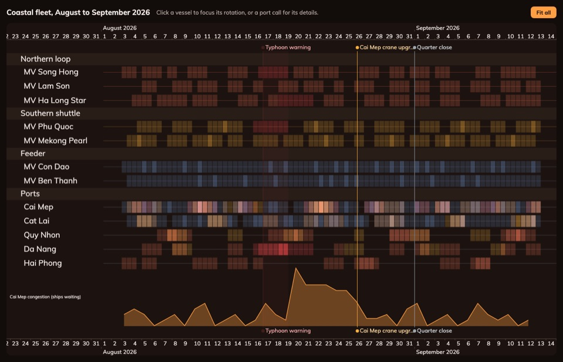
Fleet timeline
A coastal fleet over two months. Click a vessel to focus its rotation, or a port call for its details.
Build your own chart
The same package powers every example above.